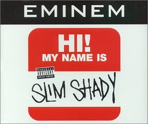

Qui est Eminem ?
Eminem est un rappeur Américain né le 17 octobre 1972 il fait actuellement parti des artistes musicaux les plus influents et suivis au monde. De son vrai nom Marshall Bruce Mathers, eminem a eu une enfance très difficile, son père les a abandonnés lui et sa mère vers ses 6 mois et sa mère qui était accro a la drogue appelée “valium” qui apparait juste dans un de ses titres intitulé “My Mom”. Je vous laisse aller consulter les différents articles que nous mettons à votre disposition sur notre site pour mieux apprendre à connaître cet artiste qui est Eminem et à mieux comprendre ses paroles de chanson.

My name is qui a pour auteur Eminem et pour Compositeur/Producteur Dr. Dre est sortie le 23 Février 1999. Cette Musique a été la première à introduire le personnage de Slim Shady qui est un de ses 3 personnages joués avec Eminem et Marshal Mathers. Dans le clip de cette musique, eminem parodie des personnalités publique comme Marilyn Manson et Bill Clinton on remarque que Eminem fait “le clown” dans ce clip comme dans certains autres clips comme dans “just lose it” et dans “the real slim shady”.
“I smoke a fat pound of grass and fall on my ass Faster than a fat bitch that sat down too fast”
Dans ce passage Eminem nous montre son addiction pour les drogues.
“Walked in the strip club, had my jacket zipped up Flashed the bartender, then stuck my dick in the tip cup”
Dans ces lignes Eminem denonce que les hommes portant des longs manteaux ne portent rien dessous et les portent juste pour pouvoir montrer leurs parties génitales à n’importe qui.
DARTY Quentin